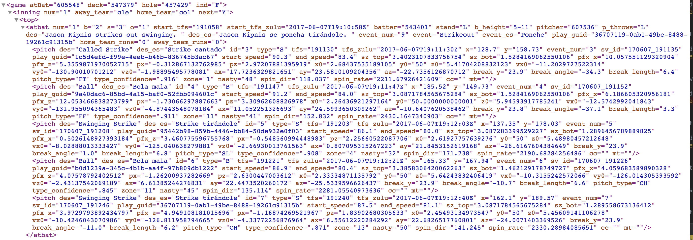
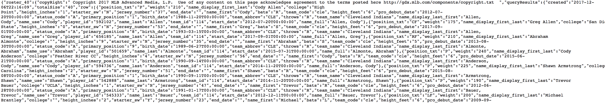

DingerDB: A modern baseball database and analytics platform
https://www.DingerDB.com
Brad Hurley
- Developer at IBM Watson Health
- Twitter: @sqlBrad
- Cleveland Indians Fan
- I like data and beer
Carter Danko
- Developer at IBM Watson Health
- Email: carter.danko@gmail.com
- Twitter: @cmdanko
- Will code for beer
What is DingerDB
By The Numbers
| Data Type |
Row Counts |
| Players |
22,000+ |
| Games |
25,000+ |
| Pitches |
7,000,000+ |
| Venues |
90+ |
| Pick Off Attempts |
190,000+ |
| At Bats |
2,000,000+ |
| Innings |
200,000+ |
| Line Scores |
250,000+ |
| Base Runners |
1,700,000+ |
Inspiration
- RetroSheets
- Lahman Database
Tech Stack
- Python
- MySQL
- Superset
- Docker
- Amazon AWS
- Jenkins
- Redis
Data Acquisitions Process
- Flat files on webserver
- Folder based on year/month/day
- Walk os tree
- Separate parallel process downloads files
Raw Data
JSON :)
XML :(
At Bat

Roster

Data Model
Classes defined in Python using SQLAlchemy
class AtBat(Base):
__tablename__ = "at_bat"
id = Column(Integer, primary_key=True)
game_join_id = Column(Integer)
home_team_runs = Column(Integer)
away_team_runs = Column(Integer)
b = Column(Integer)
s = Column(Integer)
o = Column(Integer)
on_1b = Column(Integer)
on_2b = Column(Integer)
on_3b = Column(Integer)
des = Column(String(450))
event_num = Column(Integer)
pitcher = Column(Integer)
batter = Column(Integer)
num = Column(Integer)
start_tfs_zulu = Column(TIMESTAMP)
start_tfs = Column(Time)
event = Column(String(50))
play_guid = Column(String(36))
stand = Column(String(1))
b_height = Column(String(4))
p_throws = Column(String(1))
Data Processing/Parsing
# Example Usage
team_parser = TeamParser(path=TEAM_URL)
team_parser.parse()
# TeamParser Snippet
class TeamParser(Parser):
def parse(self):
teams = Utilities.get_distinct_values("team", "team_id")
data = self.get_data()
root = etree.fromstring(data)
for element in root.iter():
if element.tag == 'team':
team = Team()
team.aws_club_slug = element.get('aws_club_slug')
team.mobile_url = element.get('mobile_url')
team.mobile_es_url = element.get('mobile_es_url')
team.mobile_url_base = element.get('mobile_url_base')
team.id = element.get('id')
Hosting
- AWS
- RDBMS isolated
- Cluster of Docker machines
- Treat the servers like cattle not pets
Superset Docker Config
SQLALCHEMY_DATABASE_URI = 'mysql://USER:PASSWORD@IP_ADDRESS/schema'
SECRET_KEY = 'APP_SECRET_KEY'
APP_NAME = "DingerDB"
LANGUAGES = {'en': {'flag': 'us', 'name': 'English'}}
CACHE_DEFAULT_TIMEOUT = 30 # 30s default timeout
ROW_LIMIT = 5000
VIZ_ROW_LIMIT = 1000
SQL_MAX_ROW = 2000
DISPLAY_SQL_MAX_ROW = 1000
CACHE_CONFIG = {
'CACHE_TYPE': 'redis',
'CACHE_DEFAULT_TIMEOUT': 30,
'CACHE_KEY_PREFIX': 'superset_',
'CACHE_REDIS_HOST': 'REDIS_IP',
'CACHE_REDIS_PORT': 6379,
'CACHE_REDIS_DB': 15,
'CACHE_REDIS_URL': 'redis://REDIS_IP:6379/15'
}
Bulk Loading Historical
- Multi-Threading
- Post Script
- Static Data
Daily Data Updates
- Had all historical data downloaded/processed, but no insight into a game from a week ago
- Created process to incrementally download and process data running on Jenkins
- Jenkins instance, along with jenkins job and environment can be rebuilt in 5 minutes
- Download -> Redis -> Process -> Archive -> Cleanup
Issues
- Dates, Times, and DateTime
- Tracking What Has Been Processed
- Generating Linking Keys
- Generating Good Linking Keys
- Adding Player Data
- AWS Operations headbanging
- Over Engineering
- Time
Future
- Open Source
- Stand Alone Database
- REST API
- Public Access
- Logo
- Sell Out
Demo
Questions
For access to https://www.DingerDB.com hit us up on twitter @dinger_db.